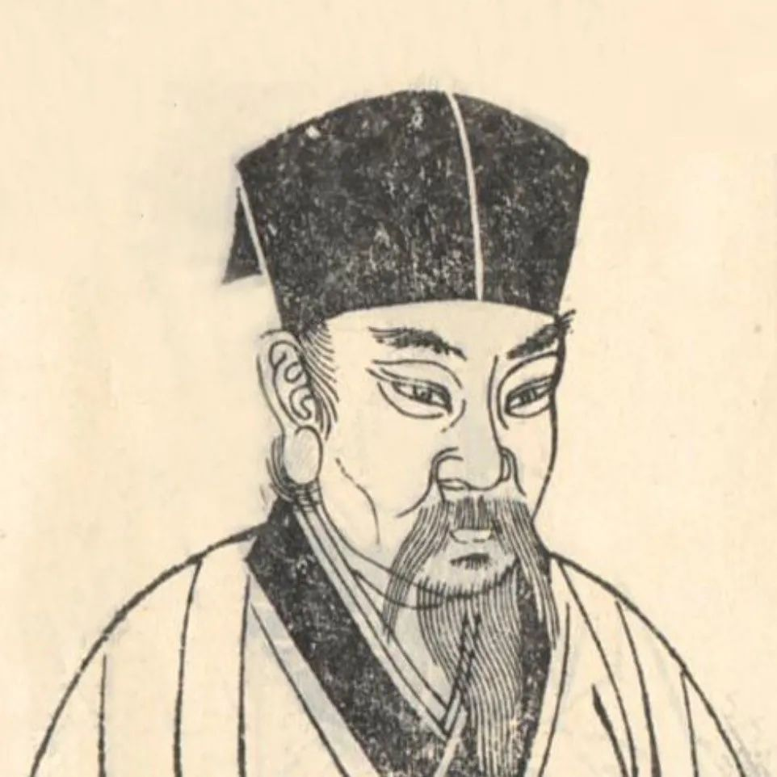

苏轼（1037年－1101年），字子瞻，号东坡居士，眉州眉山（今四川省眉山市）人，北宋著名文学家、书画家、政治家。苏轼是宋代文学的代表人物之一，他的诗词、散文、书法和绘画在中国文化史上占有重要地位。苏轼的文学作品风格多样，既有豪放派的气势磅礴，也有婉约派的细腻柔美。他的诗词内容丰富，题材广泛，既有描写自然景物的优美诗篇，也有抒发个人情感和政治抱负的深情之作。苏轼的散文以其清新流畅、富有哲理而著称，他的《赤壁赋》《前赤壁赋》等作品被誉为古文中的经典之作。作为书法家，苏轼创立了“苏体”，对后世书法艺术产生了深远影响。此外，苏轼还是一位杰出的画家，他的山水画作品以其独特的艺术风格和深厚的文化内涵在中国绘画史上占有重要地位。苏轼的一生经历了多次政治起伏，但他始终保持着乐观豁达的心态，其人格魅力和文学成就使他成为中国文化史上一位不朽的人物。
------ 念奴娇·赤壁怀古 | 水调歌头 | 定风波 ------
大江东去，浪淘尽，千古风流人物。
故垒西边，人道是，三国周郎赤壁。
乱石穿空，惊涛拍岸，卷起千堆雪。
江山如画，一时多少豪杰。
遥想公瑾当年，小乔初嫁了，雄姿英发。
羽扇纶巾，谈笑间，樯橹灰飞烟灭。
故国神游，多情应笑我，早生华发。
人生如梦，一尊还酹江月。
明月几时有？把酒问青天。
不知天上宫阙，今夕是何年？
我欲乘风归去，又恐琼楼玉宇，高处不胜寒。
起舞弄清影，何似在人间？
转朱阁，低绮户，照无眠。
不应有恨，何事长向别时圆？
人有悲欢离合，月有阴晴圆缺，此事古难全。
但愿人长久，千里共婵娟。
莫听穿林打叶声，何妨吟啸且徐行。
竹杖芒鞋轻胜马，谁怕？一蓑烟雨任平生。
料峭春风吹酒醒，微冷，山头斜照却相迎。
回首向来萧瑟处，归去，也无风雨也无晴。
© 版权所有 自定义小组3